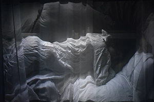
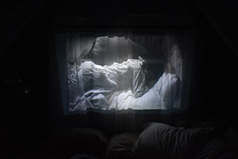
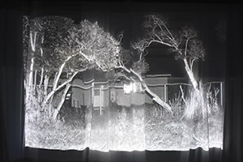
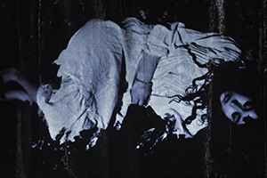
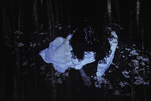

Most Recent Project
Sleep with the curtains closed 2025
These five photographs are about the strange and unreal concept of sleeping and the dreams that come with it. In my photos, I portray a girl's dreams projected above her. The photos carry a deep sense of atmosphere and melancholy. My concept plays with the idea of recording an image and casting it back onto the source from which it came. Ask yourself: are the images of the girl her dreams or herself? She's in a soothing isolation; she lives on the bridge between the nocturnal imagination and the limits of the tangible world.




